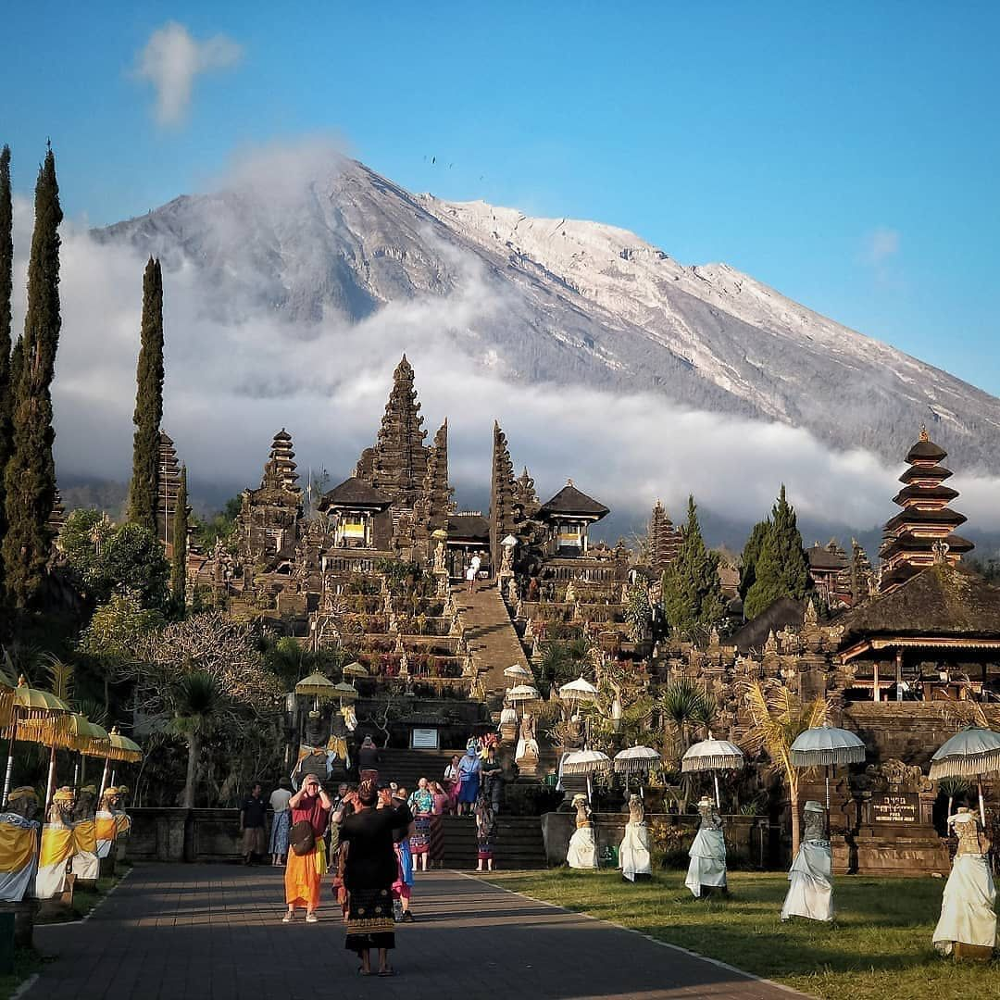

Sebagai pusat spiritual umat Hindu di Bali, Pura Besakih sering disebut sebagai Pura Agung Besakih atau Mother Temple of Bali. Kompleks ini terdiri dari lebih dari 80 pura, dengan Pura Penataran Agung sebagai pura utama. Setiap pura dalam kompleks ini memiliki fungsi dan makna tersendiri, yang terkait dengan sistem kepercayaan dan ritual Hindu di Bali.
Pura Besakih menjadi pusat berbagai upacara keagamaan, terutama upacara besar seperti Upacara Eka Dasa Rudra, yang dilakukan setiap 100 tahun sekali. Selain sebagai tempat ibadah, Pura Besakih juga menjadi destinasi wisata terkenal karena arsitekturnya yang megah, suasana sakral, dan pemandangan indah Gunung Agung.
SEJARAH PURA BESAKIH BALI
1.Asal Usul dan Legenda
Menurut legenda, Pura Besakih didirikan oleh Rsi Markandeya, seorang pendeta Hindu dari India yang datang ke Pulau Jawa dan kemudian ke Bali pada abad ke-8. Saat tiba di lereng Gunung Agung, ia menerima wahyu untuk mendirikan tempat suci. Beliau kemudian menancapkan paku bumi yang disebut Basuki, yang diyakini sebagai asal nama "Besakih".
2.Perkembangan Pada Masa Kerjaan Bali
Selama era Kerajaan Bali Kuno (abad ke-10 hingga ke-14), Pura Besakih mulai berkembang menjadi pusat keagamaan penting. Raja-raja dari Dinasti Warmadewa dan kemudian Gelgel serta Klungkung mendukung pemeliharaan dan perluasan kompleks pura.
3.Pengaruh Hindu Majapahit
Ketika Majapahit runtuh pada abad ke-15, banyak pendeta dan bangsawan Hindu-Jawa bermigrasi ke Bali, membawa serta ajaran Hindu Siwa-Buddha. Hal ini memperkaya tradisi keagamaan di Pura Besakih, menjadikannya pusat spiritual utama di Bali.
4.Pura Besakih Selamat dari Letusan Gunung Agung
Pada tahun 1963, Gunung Agung meletus dengan dahsyat, menghancurkan banyak desa di sekitarnya. Namun, secara ajaib, aliran lava berhenti hanya beberapa meter dari kompleks Pura Besakih, sehingga pura ini tetap utuh. Peristiwa ini semakin memperkuat keyakinan masyarakat bahwa Pura Besakih adalah tempat suci yang dilindungi oleh kekuatan spiritual.
5.Status Sebagai Warisan Budaya dan Tempat IbadahS
5. Status Sebagai Warisan Budaya dan Tempat Ibadah Saat ini, Pura Besakih tidak hanya menjadi tempat ibadah bagi umat Hindu Bali tetapi juga destinasi wisata budaya yang terkenal di dunia. Upacara-upacara besar seperti Eka Dasa Rudra (setiap 100 tahun sekali) dan Bhatara Turun Kabeh (setiap tahun) masih rutin diselenggarakan di sini. Pura Besakih mencerminkan keindahan arsitektur khas Bali serta menjadi simbol harmoni antara manusia, alam, dan Tuhan (Tri Hita Karana).
 SEJARAHFASILITA PURA BESAKIH BALI
1.Area Parkir Luas
Pura Besakih memiliki area parkir yang cukup luas untuk kendaraan pribadi, bus pariwisata, dan sepeda motor. Area parkir ini terletak di bagian bawah kompleks pura, sehingga pengunjung perlu berjalan atau menggunakan transportasi lokal menuju area utama pura.
2.Pusat Informasi dan Tiket
Terdapat loket tiket masuk bagi wisatawan yang ingin mengunjungi pura. Di sini juga tersedia informasi tentang sejarah Pura Besakih, aturan berkunjung, dan pemandu wisata.
3.Jasa Pemandu Wisata (guide lokal)
Untuk memahami lebih dalam tentang sejarah dan makna spiritual Pura Besakih, pengunjung dapat menggunakan jasa pemandu wisata lokal yang biasanya tersedia di pintu masuk.
4.Warung dan Restoran
Di sekitar kawasan Pura Besakih terdapat beberapa warung makan dan restoran yang menyediakan makanan khas Bali dan makanan lainnya untuk wisatawan.
5.Tempat Penyewaan Sarung & Selendang
Karena Pura Besakih adalah tempat suci, semua pengunjung diwajibkan mengenakan sarung dan selendang sebagai bagian dari etika berbusana saat memasuki area pura. Jika tidak membawa sendiri, pengunjung bisa menyewanya di sekitar pintu masuk.
6.Toilet dan Fasilitas Umum
7.Toko oleh-oleh dan souvenir
Di sekitar kawasan Pura Besakih, banyak pedagang yang menjual berbagai oleh-oleh khas Bali, seperti kain batik, patung, perhiasan, dan pernak-pernik khas Hindu Bali.
8.Pos Keamanan dan Kesehatan
Terdapat pos keamanan serta fasilitas kesehatan sederhana untuk memberikan bantuan jika terjadi keadaan darurat bagi pengunjung atau umat yang beribadah. Dengan fasilitas yang cukup lengkap, pengunjung dapat menikmati kunjungan ke Pura Besakih dengan nyaman dan tetap menghormati kesakralan tempat ini.